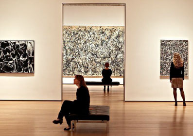
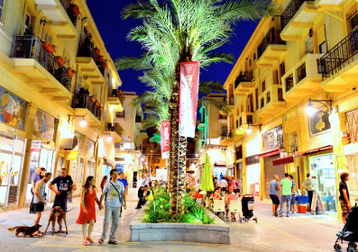

הגלריות
הרובע טומן בחובו כל כך הרבה היסטוריה תרבותית הוא ללא ספק המקום האידיאלי לחגוג בו אומנות ויצירה. מסיבה זו, ניתן לראות מגוון רחב של גלריות המתפתחות ברובע. בין 'פירמידה', המרכז המרשים לאומנות עכשווית, לבין גלריות בוטיק קטנות המציגות אומנות מגוונת ואוונגרדית, אין חובב אומנות שלא ייהנה לשוטט ולספוג אווירת יצירה המרחיבה את הלב.

שוק הפשפשים
הריחות, הצבעים, הטעמים, האנשים המחייכים – אין תיאור מתאים יותר מזה לחוויית שוק הפשפשים. כאן תוכלו לטייל בין סמטאותיו הצרות של השוק, להביט בחפצים מלאי ההיסטוריה והזיכרונות, לקנות איזו עששית עתיקה או רדיו עם כפתורים שכבר לא מוצאים בשוק מקום אחר.התחברו לחוויית קנייה אמיתית, ססגונית, מלהיבה, בשווקים של ואדי סאליב.
לבלות בעיר התחתית או בנמל?
במרחק הליכה מרובע האומנים תוכלו ליהנות משפע מקומות בילוי חווייתיים. לבלות בעיר התחתית של חיפה שהפכה להיות מוקד אורבני וצעיר ובו מסעדות, גלריות אומנות, חנויות מעצבים ועוד. גם בנמל חיפה תוכלו לטייל וליהנות משפע מקומות בילוי וכמובן להירגע מול מהנוף עוצר הנשימה של ים התיכון.

בוקר של קפה או בירה?
מוסדות אוכל, ברים ומסעדות ותיקות לצד מקומות בילוי טרנדיים מתחם העיר התחתית והנמל המתחדש בחיפה הם שילוב של היסטוריה, מסורת שתייה ואווירה שוקקת חיים. כאן תגלו שלצד בתי האוכל ההיסטוריים כגון בורקס בכר העגלה שוכנות מסעדות צעירות, פאבים ובתי קפה חדשים. מעיין הבר, בוצ'ה בר, העוגן וקלמנס, הם רק חלק מהמסעדות והבארים הטרנדיים המושכים אליהם בליינים מכל הארץ.